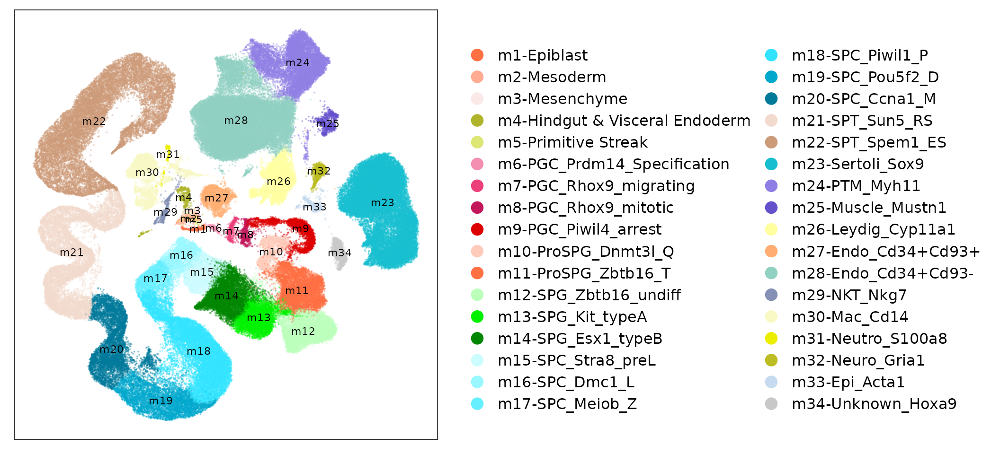
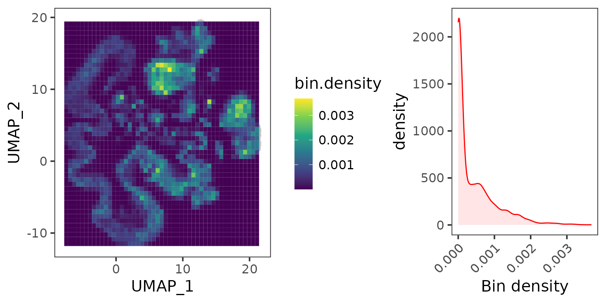
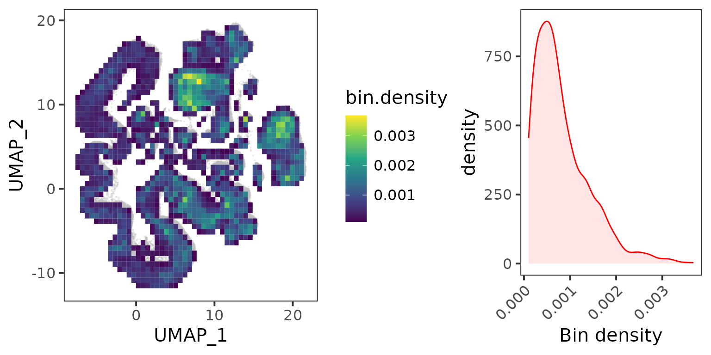
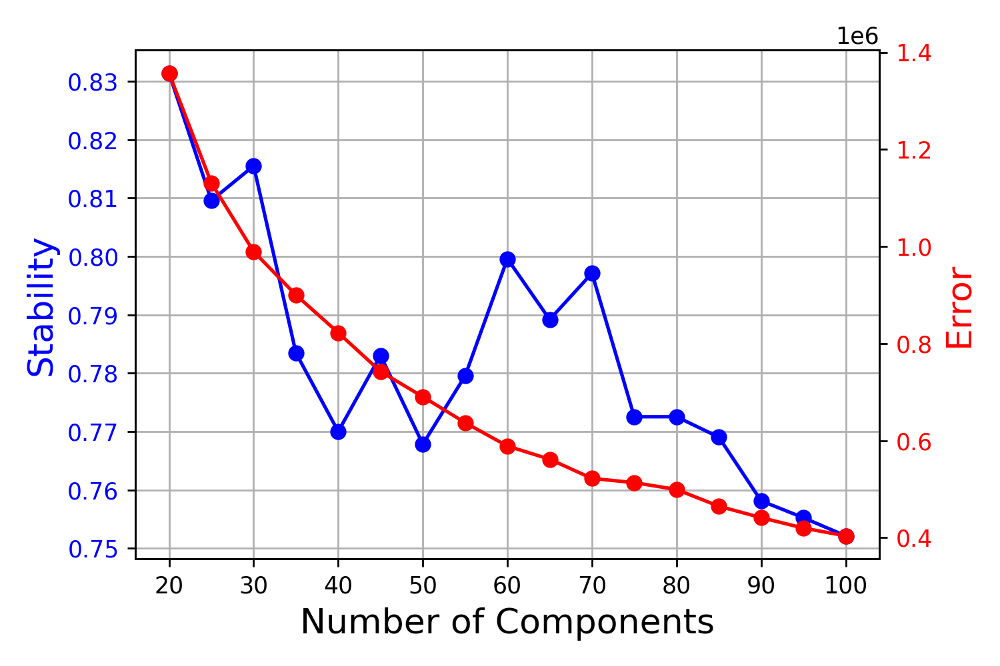
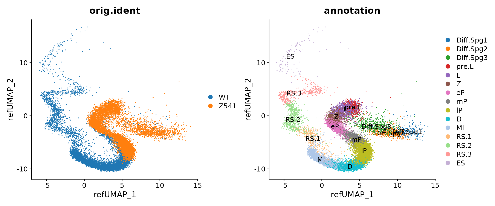
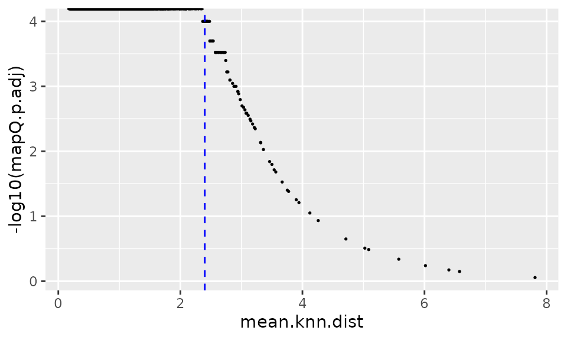
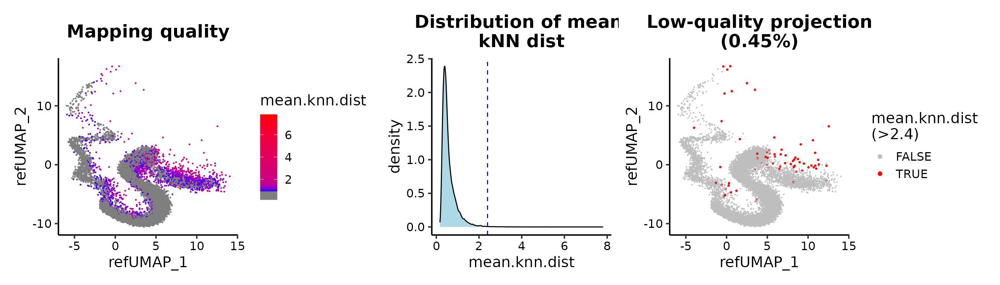
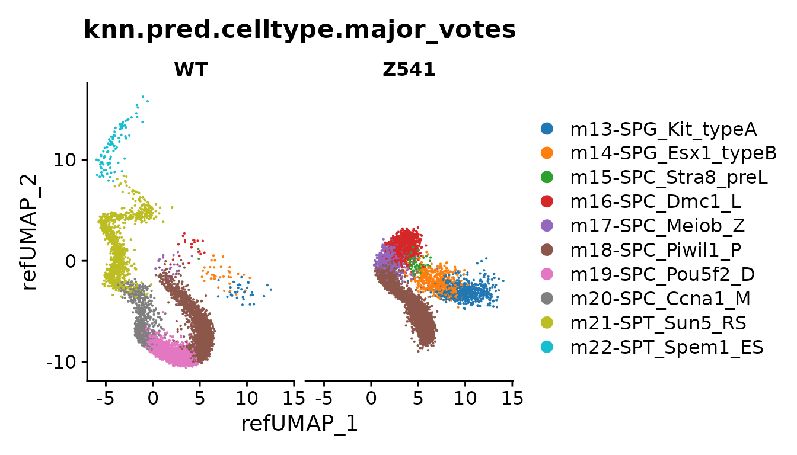
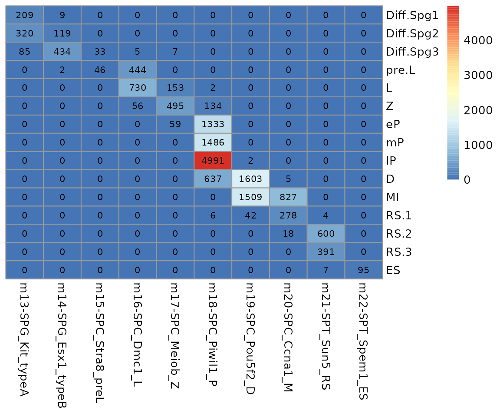

Project the perturbed germ cells onto mouse testicular cell atlas
Compiled: July 24, 2023
Source:vignettes/mTCA_perturbed_germ_cells.Rmd
mTCA_perturbed_germ_cells.RmdTo illustrate ProjectSVR’s ability to enable the interpretation of defects of perturbed stages in a continuous developmental trajectory. Here, we provide a tutorial about how to project Zfp541-KO and WT germ cells 1 onto a mouse testicular cell atlas.
In this tutorial, we do not utilize the advanced wrapper functions (MapQuery and LabelTransfer) to illustrate how to use the functions underly.
We adopt consensus non-negative matrix factorization (cNMF) for feature extraction instead of the FindAllMarkers function in Seurat when we didn’t know the suitable granularity for cell clusters.
Feature Selection
Load reference data
seu.ref <- qs::qread("mTCA.seurat.slim.qs")
data.plot <- FetchData(seu.ref, vars = c(paste0("UMAP_", 1:2), "Cell_type_symbol") )
ggplot(data.plot, aes(UMAP_1, UMAP_2, color = Cell_type_symbol), pt.size = .4) +
geom_point(size = .1, alpha = .3) +
scale_color_manual(values = seu.ref@misc$data.refplot$colors) +
geom_text(inherit.aes = F, data = seu.ref@misc$data.refplot$text.pos,
mapping = aes(x, y, label = label), size = 3) +
guides(color = guide_legend(ncol = 2, override.aes = list(size = 4, alpha = 1))) +
DimTheme()
Make meta cells
Here, we introduce the consensus NMF (cNMF) methods for signature extraction.
To speed up the cNMF procedure, we utilize the meta cell method that merges the adjacent cells in UMAP space into meta cells.
## Grid the adjacent cells in the UMAP space.
emb.mat <- seu.ref[["umap"]]@cell.embeddings
gd <- EstimateKnnDensity(emb.mat = emb.mat)
gd <- subset(gd, bin.density.threshold=1e-4, n.cells.threshold=10)
plot(gd)
## Make meta cells
metacell.counts <- MergeCells(seu.ref[["RNA"]]@data, gd = gd, by = "mesh.points")
dim(metacell.counts)## [1] 32285 3934Now we compress the 188,862 cells into 3934 meta cells.
## The genes expressed in at least 20 cells were kept.
expr.in.cells <- Matrix::rowSums(metacell.counts > 0)
metacell.counts <- metacell.counts[expr.in.cells >= 20, ]
## Drop mitochondrial genes
is.mito <- grepl("^mt-", rownames(metacell.counts))
metacell.counts <- metacell.counts[!is.mito, ]
## Transfer the Seurat format into h5ad file.
seu.mc <- CreateSeuratObject(counts = metacell.counts)
sceasy::convertFormat(seu.mc, from = "seurat", to = "anndata", main_layer = "counts",
outFile = file.path(OUTPATH, "mTCA.metacells.h5ad"))## AnnData object with n_obs × n_vars = 3934 × 28549
## obs: 'orig.ident', 'nCount_RNA', 'nFeature_RNA'
## var: 'name'## Save HVGs
writeLines(seu.ref[["RNA"]]@var.features, file.path(OUTPATH, "mTCA.metacells.hvgs.txt"))Run cNMF
FindOptimalK(counts.fn = file.path(OUTPATH, "mTCA.metacells.h5ad"),
run.name = "K20_K100_by5",
components = seq(20,100,5),
genes.fn = file.path(OUTPATH, "mTCA.metacells.hvgs.txt"),
out.path = OUTPATH,
n.iter = 20,
cores = 20)This will generate a deagnostic plot for the K selection under perturbed_gc/K20_K100_by5/K20_K100_by5.k_selection.png.

The solution of K = 70 makes the decomposition the less reconstruction error without the loss of solution robustness.
RunCNMF(counts.fn = file.path(OUTPATH, "mTCA.metacells.h5ad"),
run.name = "K70",
out.path = OUTPATH,
K = 70,
genes.fn = file.path(OUTPATH, "mTCA.metacells.hvgs.txt"),
n.iter = 50, # here we run more iterations.
cores = 20,
local.density.cutoff = 0.2,
n.top.genes = 100,
show.clustering = TRUE)Feature evaluation
top.genes <- read.table(file.path(OUTPATH, "K70/top100_genes.k_70.dt_0_2.txt"), header = T)Here, we try the AUCell method for calculating signature scores.
counts <- seu.ref[["RNA"]]@data
auc.mat <- ComputeModuleScore(counts, gene.sets = top.genes, method = "AUCell", cores = 10)
saveRDS(auc.mat, file.path(OUTPATH, "mTCA.AUCell.rds"))auc.mat <- readRDS(file.path(OUTPATH, "mTCA.AUCell.rds"))
emb.mat <- seu.ref[["umap"]]@cell.embeddings
sel.cells <- sample(rownames(auc.mat), size = 1e4)
data.plot <- cbind(auc.mat[sel.cells, ], emb.mat[sel.cells, ])
data.plot <- data.plot %>%
pivot_longer(cols = 1:70, names_to = "component", values_to = "score")
data.plot %>%
group_split(component) %>%
map(
~ggplot(., aes(UMAP_1, UMAP_2, color = score)) +
geom_point(size = .5) +
scale_color_viridis_c() +
facet_grid(~ component, labeller = function(x) label_value(x, multi_line = FALSE)) +
theme_bw(base_size = 15)
) %>%
cowplot::plot_grid(plotlist = ., align = 'hv', ncol = 7)
Build Reference Model
Training reference model
umap.model <- FitEnsembleSVM(feature.mat = auc.mat, emb.mat = emb.mat, n.models = 20, cores = 20)Save the reference model
ref.cellmeta stores:
[optional] colors: for plots
[optional] text.pos: text annotation on the reference plots
meta.data: cell meta data (embeddings + cell type information)
ref.cellmeta <- seu.ref@misc$data.refplot
ref.cellmeta$meta.data <- FetchData(seu.ref, vars = c(paste0("UMAP_", 1:2), "Cell_type_symbol"))
reference <- list(
"models" = list(
"umap" = umap.model
),
"genes" = list(
"gene.sets" = top.genes # list
),
"ref.cellmeta" = ref.cellmeta # list for reference plot
)
saveRDS(reference, "model.mTCA.rds")Map Query to Reference
Reference mapping
reference <- readRDS("model.mTCA.rds")
seu.q <- qs::qread("query_Zfp541-KO.seurat.slim.qs")
newdata <- ComputeModuleScore(seu.q[["RNA"]]@data, gene.sets = top.genes,
method = "AUCell", cores = 20)
proj.res <- ProjectNewdata(feature.mat = newdata, model = reference$models$umap, cores = 20)
proj.res## An object of class CellProject
## @data: 70 features across 17253 cells.
## @embeddings: ( 17253 , 2 ).
## @refined.embeddings: ( 0 , 0 ).
## @cellmeta: ( 17253 , 0 ).
## @neighbors: NULLseu.q[["ref.umap"]] <- CreateDimReducObject(proj.res@embeddings, key = "refUMAP_", assay = "RNA")
p1 <- DimPlot(seu.q, reduction = "ref.umap", group.by = "orig.ident")
p2 <- DimPlot(seu.q, reduction = "ref.umap", group.by = "annotation", label = T)
(p1 + p2) & ggsci::scale_color_d3("category20")
Mapping quality
proj.res <- AddProjQual(object = proj.res, k = 20, repeats = 1e4)
head(proj.res@cellmeta)## mean.knn.dist p.val p.adj
## WT_AAACCCAAGCGATCGA-1 0.5288546 0 0
## WT_AAACCCAAGCTAGAAT-1 0.3845612 0 0
## WT_AAACCCACAACGGTAG-1 0.6126770 0 0
## WT_AAACCCACAATATCCG-1 1.0047275 0 0
## WT_AAACCCACAGGCGATA-1 0.4237840 0 0
## WT_AAACCCACATATGGCT-1 0.5636432 0 0seu.q$mean.knn.dist <- proj.res@cellmeta$mean.knn.dist
seu.q$mapQ.p.val <- proj.res@cellmeta$p.val
seu.q$mapQ.p.adj <- proj.res@cellmeta$p.adj
data.plot <- FetchData(seu.q, vars = c(paste0("refUMAP_", 1:2), "mean.knn.dist", "mapQ.p.adj"))
ggplot(data.plot, aes(mean.knn.dist, -log10(mapQ.p.adj))) +
geom_point(size = .3) +
geom_vline(xintercept = 2.4, linetype = "dashed", color = "blue")
## cutoff by adjusted p value
MapQCPlot(seu.q, p.adj.cutoff = 1e-3)## or mean.knn.dist
MapQCPlot(seu.q, map.q.cutoff = 2.4)
Label transfer
seu.q <- subset(seu.q, mean.knn.dist < 2.4)
## input for KNN label transfer
ref.cellmeta <- reference$ref.cellmeta$meta.data
query.emb <- seu.q[["ref.umap"]]@cell.embeddings
ref.emb <- ref.cellmeta[, paste0("UMAP_", 1:2)]
ref.labels <- ref.cellmeta[["Cell_type_symbol"]]
names(ref.labels) <- rownames(ref.cellmeta)
## KNN label transfer
knn.pred.res <- KnnLabelTransfer(query.emb = query.emb, ref.emb = ref.emb,
ref.labels = ref.labels, k = 100)
knn.pred.mv <- MajorityVote(feature.mat = newdata,
cell.types = knn.pred.res[, c("labels"), drop = F],
k = 100,
min.prop = 0.3)
## write results into Seurat object.
seu.q$knn.pred.celltype <- knn.pred.res$labels
seu.q$knn.pred.celltype.major_votes <- knn.pred.mv$labels.major_votes
ref.celltype.levels <- levels(ref.cellmeta[["Cell_type_symbol"]])
seu.q$knn.pred.celltype <- factor(seu.q$knn.pred.celltype, levels = ref.celltype.levels)
seu.q$knn.pred.celltype.major_votes <- factor(seu.q$knn.pred.celltype.major_votes,
levels = ref.celltype.levels)
DimPlot(seu.q, reduction = "ref.umap", group.by = "knn.pred.celltype.major_votes",
split.by = "orig.ident") +
ggsci::scale_color_d3()
data.stat <- table(seu.q$annotation, seu.q$knn.pred.celltype.major_votes)
data.stat <- data.stat[, colSums(data.stat) > 0]
pheatmap::pheatmap(data.stat, display_numbers = T, number_format = "%.0f",
cluster_rows = F, cluster_cols = F,
number_color = "black")
Session Info
sessionInfo()## R version 4.1.2 (2021-11-01)
## Platform: x86_64-pc-linux-gnu (64-bit)
## Running under: CentOS Linux 7 (Core)
##
## Matrix products: default
## BLAS: /opt/R4.1/lib64/R/lib/libRblas.so
## LAPACK: /opt/R4.1/lib64/R/lib/libRlapack.so
##
## locale:
## [1] LC_CTYPE=en_US.UTF-8 LC_NUMERIC=C
## [3] LC_TIME=en_US.UTF-8 LC_COLLATE=en_US.UTF-8
## [5] LC_MONETARY=en_US.UTF-8 LC_MESSAGES=en_US.UTF-8
## [7] LC_PAPER=en_US.UTF-8 LC_NAME=C
## [9] LC_ADDRESS=C LC_TELEPHONE=C
## [11] LC_MEASUREMENT=en_US.UTF-8 LC_IDENTIFICATION=C
##
## attached base packages:
## [1] stats graphics grDevices utils datasets methods base
##
## other attached packages:
## [1] forcats_0.5.2 stringr_1.4.1 dplyr_1.0.10
## [4] purrr_0.3.4 readr_2.1.2 tidyr_1.2.1
## [7] tibble_3.1.8 ggplot2_3.4.1 tidyverse_1.3.2
## [10] ProjectSVR_0.1.0.9000 sp_1.5-0 SeuratObject_4.1.2
## [13] Seurat_4.2.0
##
## loaded via a namespace (and not attached):
## [1] rappdirs_0.3.3 scattermore_0.8
## [3] R.methodsS3_1.8.2 ragg_1.2.2
## [5] bit64_4.0.5 knitr_1.40
## [7] DelayedArray_0.20.0 R.utils_2.12.0
## [9] irlba_2.3.5 data.table_1.14.2
## [11] rpart_4.1.16 RCurl_1.98-1.8
## [13] KEGGREST_1.34.0 doParallel_1.0.17
## [15] generics_0.1.3 BiocGenerics_0.40.0
## [17] cowplot_1.1.1 RSQLite_2.2.17
## [19] RApiSerialize_0.1.2 RANN_2.6.1
## [21] future_1.28.0 bit_4.0.4
## [23] tzdb_0.3.0 spatstat.data_3.0-0
## [25] xml2_1.3.3 lubridate_1.8.0
## [27] httpuv_1.6.6 ggsci_2.9
## [29] SummarizedExperiment_1.24.0 assertthat_0.2.1
## [31] gargle_1.2.1 xfun_0.33
## [33] hms_1.1.2 jquerylib_0.1.4
## [35] evaluate_0.16 promises_1.2.0.1
## [37] fansi_1.0.3 dbplyr_2.2.1
## [39] readxl_1.4.1 igraph_1.3.5
## [41] DBI_1.1.3 htmlwidgets_1.5.4
## [43] spatstat.geom_3.0-3 googledrive_2.0.0
## [45] stats4_4.1.2 ellipsis_0.3.2
## [47] mlr3data_0.6.1 backports_1.4.1
## [49] annotate_1.72.0 MatrixGenerics_1.6.0
## [51] RcppParallel_5.1.6 deldir_1.0-6
## [53] vctrs_0.5.1 Biobase_2.54.0
## [55] here_1.0.1 ROCR_1.0-11
## [57] abind_1.4-5 cachem_1.0.6
## [59] withr_2.5.0 mlr3verse_0.2.5
## [61] mlr3learners_0.5.4 progressr_0.11.0
## [63] checkmate_2.1.0 sctransform_0.3.5
## [65] mlr3fselect_0.7.2 goftest_1.2-3
## [67] cluster_2.1.4 lazyeval_0.2.2
## [69] crayon_1.5.1 pkgconfig_2.0.3
## [71] labeling_0.4.2 GenomeInfoDb_1.30.1
## [73] nlme_3.1-155 rlang_1.0.6
## [75] globals_0.16.1 lifecycle_1.0.3
## [77] miniUI_0.1.1.1 palmerpenguins_0.1.1
## [79] modelr_0.1.9 cellranger_1.1.0
## [81] rprojroot_2.0.3 polyclip_1.10-0
## [83] matrixStats_0.62.0 lmtest_0.9-40
## [85] graph_1.74.0 Matrix_1.5-1
## [87] zoo_1.8-11 reprex_2.0.2
## [89] pheatmap_1.0.12 ggridges_0.5.3
## [91] GlobalOptions_0.1.2 googlesheets4_1.0.1
## [93] png_0.1-7 viridisLite_0.4.1
## [95] rjson_0.2.21 stringfish_0.15.8
## [97] bitops_1.0-7 R.oo_1.25.0
## [99] KernSmooth_2.23-20 Biostrings_2.62.0
## [101] blob_1.2.3 shape_1.4.6
## [103] paradox_0.10.0 parallelly_1.32.1
## [105] spatstat.random_3.0-1 S4Vectors_0.32.4
## [107] scales_1.2.1 memoise_2.0.1
## [109] GSEABase_1.56.0 magrittr_2.0.3
## [111] plyr_1.8.7 ica_1.0-3
## [113] zlibbioc_1.40.0 compiler_4.1.2
## [115] RColorBrewer_1.1-3 clue_0.3-61
## [117] fitdistrplus_1.1-8 cli_3.4.1
## [119] XVector_0.34.0 mlr3tuningspaces_0.3.0
## [121] mlr3filters_0.6.0 listenv_0.8.0
## [123] patchwork_1.1.2 pbapply_1.5-0
## [125] MASS_7.3-58.1 mgcv_1.8-40
## [127] tidyselect_1.1.2 stringi_1.7.6
## [129] textshaping_0.3.6 highr_0.9
## [131] yaml_2.3.5 ggrepel_0.9.1
## [133] grid_4.1.2 sass_0.4.2
## [135] tools_4.1.2 mlr3misc_0.11.0
## [137] future.apply_1.9.1 parallel_4.1.2
## [139] mlr3cluster_0.1.4 circlize_0.4.15
## [141] rstudioapi_0.14 uuid_1.1-0
## [143] qs_0.25.5 foreach_1.5.2
## [145] AUCell_1.16.0 gridExtra_2.3
## [147] farver_2.1.1 Rtsne_0.16
## [149] digest_0.6.29 rgeos_0.5-9
## [151] shiny_1.7.2 Rcpp_1.0.9
## [153] GenomicRanges_1.46.1 broom_1.0.1
## [155] later_1.3.0 RcppAnnoy_0.0.19
## [157] httr_1.4.4 AnnotationDbi_1.56.2
## [159] mlr3tuning_0.14.0 ComplexHeatmap_2.10.0
## [161] colorspace_2.0-3 rvest_1.0.3
## [163] XML_3.99-0.9 fs_1.5.2
## [165] tensor_1.5 reticulate_1.26
## [167] IRanges_2.28.0 splines_4.1.2
## [169] lgr_0.4.4 uwot_0.1.14
## [171] bbotk_0.5.4 spatstat.utils_3.0-1
## [173] pkgdown_2.0.6 mlr3pipelines_0.4.2
## [175] plotly_4.10.0 systemfonts_1.0.4
## [177] xtable_1.8-4 jsonlite_1.8.0
## [179] sceasy_0.0.7 R6_2.5.1
## [181] clusterCrit_1.2.8 pillar_1.8.1
## [183] htmltools_0.5.3 mime_0.12
## [185] glue_1.6.2 fastmap_1.1.0
## [187] mlr3_0.14.0 codetools_0.2-18
## [189] utf8_1.2.2 lattice_0.20-45
## [191] bslib_0.4.0 spatstat.sparse_3.0-0
## [193] curl_5.0.1 leiden_0.4.3
## [195] mlr3viz_0.5.10 survival_3.4-0
## [197] rmarkdown_2.16 desc_1.4.2
## [199] munsell_0.5.0 GenomeInfoDbData_1.2.7
## [201] GetoptLong_1.0.5 iterators_1.0.14
## [203] haven_2.5.1 reshape2_1.4.4
## [205] gtable_0.3.1 spatstat.core_2.4-4